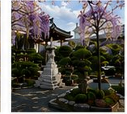
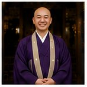
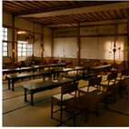
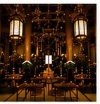
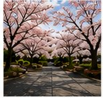
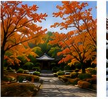
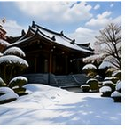

西方寺は和歌山市岩橋の地で、地域の皆さまとともに歩んできた浄土真宗本願寺派のお寺です。お念仏のみ教えを大切にしながら、人と人とのご縁をつないでまいりました。
大切な方を亡くされた悲しみのとき、人生の節目のとき、あるいは何気ない日々のなかで——どうぞお気軽に足をお運びください。皆さまが心安らかに手を合わせられる場所であり続けたいと願っております。


西方寺は、浄土真宗本願寺派（お西）に属するお寺です。ご本尊に阿弥陀如来をお迎えし、長きにわたって岩橋の地で念仏の灯をともしてまいりました。
| 宗派 | 浄土真宗本願寺派（本山：龍谷山 本願寺／西本願寺） |
|---|---|
| 山号・寺号 | 清水山 西方寺 |
| ご本尊 | 阿弥陀如来 |
| 所在地 | 〒640-8301 和歌山県和歌山市岩橋1703 |
| 主な行事 | 彼岸会（春・秋）／お盆法要／報恩講 ほか |

内陣
春の風景
秋の風景
冬の風景